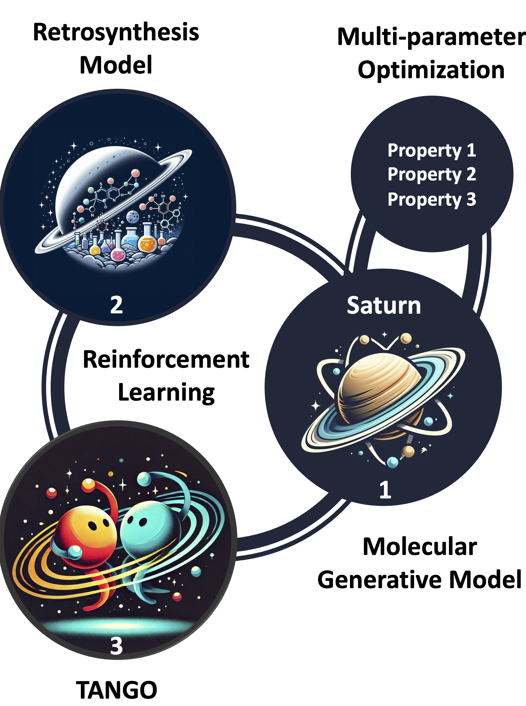
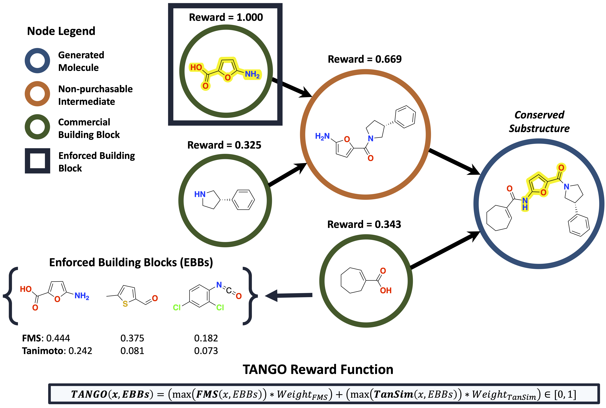
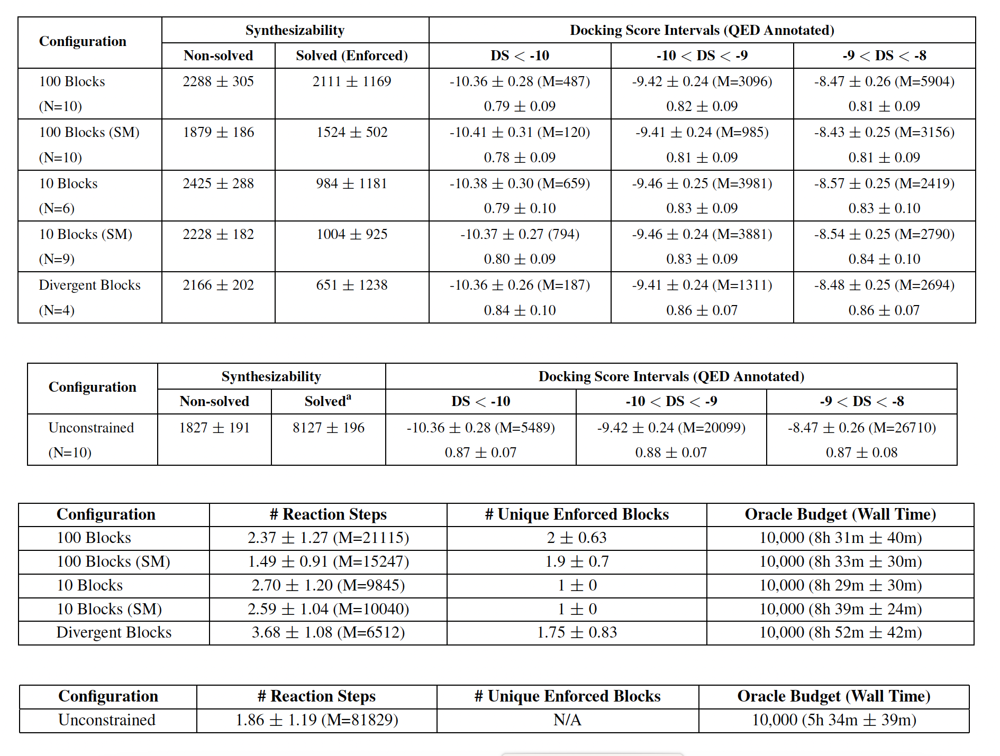
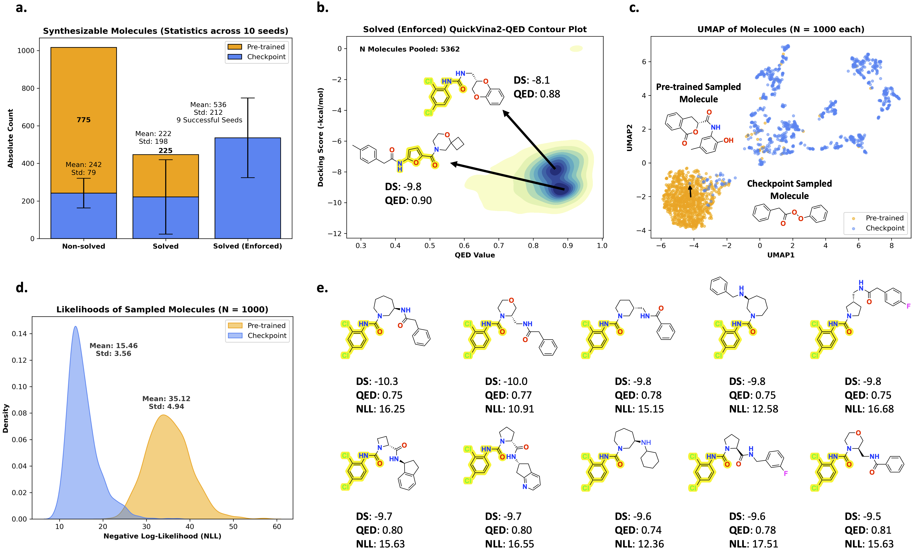

It Takes Two to Tango: Directly Optimizing for Constrained Synthesizability in Generative Molecular Design (Guo and Schwaller 2024)
Why did I choose this paper?
- From a chemist point of view prediction of synthesis paths is really relevant.
- From a ML perspective they are still a lot of challenges.
Context
Predicting synthesis path of complex organic molecules whit multiple intermediates is challenging. This task gets even more complex if the products are constrained to e.g. commercially available products.
Prior work
Synthesizability constrained molecular generation: Enforcing valid chemical transformations
- “SynNet Gao et al. (https://doi.org/10.48550/arXiv.2410.03494?):
- Uses a Markov decision process to generate molecules and synthesis pathways simultaneously through a bottom-up tree model
- Focuses primarily on synthesis tree generation without a broad multi-parameter optimization (MPO) approach
- SynFormer Gao et al. (Gao, Luo, and Coley 2024):
- generative framework that uses a scalable transformer architecture and a diffusion model to navigate synthesizable chemical space
- generates synthetic pathways by linking commercially available building blocks through known reactions
- focuses on generating pathways within a defined synthesizable space
Main contributions
- general-purpose molecular generative model that generates synthesize molecules
- TANimoto Group Overlap (TANGO) reward function for the generation of synthesizable molecules with the presence of enforced building blocks
- generated molecules can satisfy multi-parameter-optimization (MPO) objects relevant to drug discovery
Structure of the overall pipeline

- Saturn model as molecular generative model:
- based on Mamba a lightweight, autoregressive model for the sequential prediction of SMILES
- pretrained on PubChem
- Fine-tuning with a reinforcement-learning-setup:
- TANGO reward function to measure for similarity of generated molecules and enforced building blocks
- Syntheseus as retro-synthesis tool to check if molecules are synthesizable
- MPO for docking-score (biological effectiveness) and QED score (Quantitative Estimate of Drug-likeness)
Problem formulation
Case 1: Starting material constrained
A synthesis graph G(M, R) is starting-material constrained if there exists at least one leaf node \[ m \in G(M, R) \] that meets both conditions: \[ m = b \in B_{enf} \] \[ \text{depth}(m) = \max \text{depth} \]
\[ \exists m \in G(M, R) \; \text{such that} \; \text{depth}(m) = \max \; \text{depth and} \; m = b \in B_{enf} \]
- requires at least one terminal node (leaf) in the synthesis route to correspond to a specified starting material
- useful for ensuring the synthesis begins with commercially available or cost-effective starting reagents
Case 2: Intermediate Constrained Synthesis
Mathematical Definition:
A synthesis graph G(M, R) is intermediate constrained if there exists at least one intermediate node \[ m \in G(M, R) \] that belongs to the enforced building blocks \[ B_{enf} \].
\[ \exists m \in G(M, R) \; \text{such that} \; m \in B_{enf} \]
- allows for one or more intermediate steps in the synthesis to include specified building blocks
- enables designing synthetic pathways that feature important building blocks at intermediate stages
Case 3: Divergent Synthesis
A synthesis graph G(M, R) is divergent if there exists at least one intermediate node \[ m \in G(M, R) \] that meets the following conditions: \[ m = b \in B_{enf} \] All \[ b \in B_{enf} \] are non-commercial.
\[ \exists m \in G(M, R) \; \text{such that} \; \forall b \in B_{enf}, \; b \; \text{is non-commercial and} \; m = b \in B_{enf} \]
- requires that an intermediate node in the synthesis graph matches a non-commercial building block, allowing it to diverge into multiple branches
- suitable for late-stage functionalization, often required to generate diverse molecular structures in drug discovery
TANGO Reward Function
- Tanimoto Similarity:
- Metric used to quantify the similarity between two molecular structures.
- Calculated based on the overlap of molecular fingerprints, with values ranging from 0 (no similarity) to 1 (perfect similarity).
- Fuzzy Matching Substructure (FMS):
- Measures the maximum overlap between substructures of a generated molecule.
- Takes into account atom types, hybridization, and bonding patterns.
- Designed to capture functional groups and conserved structures.
The TANGO reward for a molecule m in a synthesis graph G(M, R) is calculated as the weighted sum of the Tanimoto similarity (TanSim) and Fuzzy Matching Substructure (FMS) similarity to the enforced building blocks \[ B_{enf} \].
\[ \text{TANGO}(m, B_{enf}) = \left( \max(\text{TanSim}(m, B_{enf})) \times 0.5 \right) + \left( \max(\text{FMS}(m, B_{enf})) \times 0.5 \right) \in [0, 1] \]
- Calculates the reward based on the maximum similarity between each non-root node in the synthesis graph and the enforced building blocks.
- The reward is normalized within the range [0, 1] and helps the model learn to generate molecules closer to the desired structural and functional goals.

Experimental setting
Molecular Generative Model: used model: Saturn (autoregressive SMILES-based model leveraging the Mamba architecture)
Retrosynthesis Model: Syntheseus (framework supporting various retrosynthesis algorithms) with MEGAN as the single-step retrosynthesis model, Retro* as search algorithm
Set of Commercial Building Blocks: includes fragments and reactive compounds from the ZINC database
Drug Discovery Case Study: focuses on generating molecules with optimal docking scores against ClpP (cancer-related protease target), high QED (drug-likeness) values
Experimental Details: oracle budget (maximum number of evaluations of a molecule) of 10,000 steps and evaluation across multiple seeds
Metrics:
Non-solved: count of generated molecules that the retrosynthesis model deems unsynthesizable
Solved (Enforced): count of generated molecules that the retrosynthesis model deems synthesizable and include at least one enforced building block
N (Replicates): number of successful replicates (out of 10 seeds) in which at least one Solved (Enforced) molecule is generated
Unique Enforced Blocks: average and standard deviation of unique enforced building blocks in the synthesis routes for Solved (Enforced) molecules
Reaction Steps: average and standard deviation of the number of reaction steps in synthesis routes for Solved (Enforced) molecules
Docking Score and QED
Results
Synthesizibility constrained molecules generation
- different configurations: with 10 and 100 enforced building blocks, diffenrent constrains (SM, divergent and unconstrained)
- Metrics:
- Synthesisablity: Non-solved and Solved (enforced)
- mean value for differnet docking score intervals (lower number are better)
- number of molecules in the docking score interval M
- mean QED values for every docking score interval (higher values are better)
- mean number of reactions steps
- mean number of enforced building blocks used in synthesis routs of synthesizible molecules

- comparison to other models because of new metrics hard and not shown by the authors
- TANGO reward function archives highest scores compared to only Tanimoto similarity or Fuzzy matching substructures
- equal weighting (0.5) of Tanimoto similarity and FMS in the TANGO reward function shows the best performance
- more consistent and stable outcomes across different seeds compared to other reward configurations
Learning a desirable distribution
Comparison of pre-trained model to final checkpoint of fine-tuned model (mean over 10 seeds over 1000 randomly sampled molecules)
- Distribution Shift with TANGO: enables a shift in the model’s distribution towards generating molecules that meet MPO objectives
- significant increase in Solved (Enforced) molecules, indicating the model’s successful learning of constrained synthesizability
- distribution of docking scores and QED values showed a shift towards favorable ranges
- model learned to focus on a narrower, more optimized chemical space
- Exploitation Advantage: model benefits from exploiting certain favorable enforced building blocks which promotes local exploration, allowing the generation of structurally related but optimized molecules

Conclusion
Effectiveness of TANGO: The TANGO reward function enables the Saturn model to learn constrained synthesizability effectively, balancing both synthesizability and structural similarity requirements.
Multi-Parameter Optimization: TANGO facilitates multi-parameter optimization (MPO), allowing the generation of molecules that meet complex objectives, including optimal docking scores, high QED values, and the inclusion of enforced building blocks.
Improved Synthesizability: Compared to previous methods, TANGO demonstrates a higher success rate in generating synthesizable molecules, particularly with constrained conditions.
Potential in Drug Discovery: The approach provides a promising framework for generating drug-like molecules with specific requirements, potentially accelerating the early stages of drug discovery and development.
Personal opinion
- shown method and functions are easy to understand
- missing comparison with other models to prove improvement of scores with new method